Bill of Materials and Other Reports
Bill of Materials and Other Reports
After performing network design tasks, SP Guru Transport Planner enables you to view related metrics and design results. Files containing more detailed results can be extracted anytime from SP Guru Transport Planner by selecting Info > Export to Spreadsheet or Info > Export to Web Report.
The next sections describe how to generate reports.
Procedure 6-1 Generating the Bill-of-Materials File
- Open the WDMGuru_Examples project.
- Select File > Open....
- Select the WDMGuru_Examples project, then press Open.
The example project, which contains multiple scenarios, is loaded. The Australia scenario appears in the workspace.
- Switch to the USA scenario
- Groom a SONET traffic matrix.
- Select Design > Groom DCL to OCH Traffic > Fixed Routes...
- Select the following options:
- Press Groom.
The Grooming Optimization Progress dialog box appears.
This dialog box shows the decrease of the network cost during the optimization steps of the grooming algorithm.
- When the status is Finished, close the dialog box.
Due to the grooming action, an OCH traffic matrix (STS_1_Grooming) has been created to create the logical DCL topology. This OCH traffic matrix and the groomed DCL traffic matrix STS-1 are both entirely accommodated in the network.
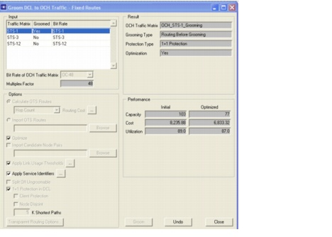
- Close the Groom DCL to OCH Traffic - Fixed Routes dialog box.
- Generate the bill of materials.
- Select Info > Export to Web Report > Bill of Materials.
The web browser is launched and the Bill Of Materials file appears.
- Browse the Overview Cost Parameters section.
- Select Overview Cost Parameters at the left side of the report. This section consists of different parts giving an overview of all equipment cost settings for the network.
- The first part is the Node Fixed Cost section: it gives an overview of the node types used in the network. Note that for the DXCs and IXCs only a continuous type is shown, because we use the continuous node models for these node types. For OXCs we use the discrete node model: several discrete OXC types are provided. For each type the cost is displayed and for each discrete type the number of available ports is shown.
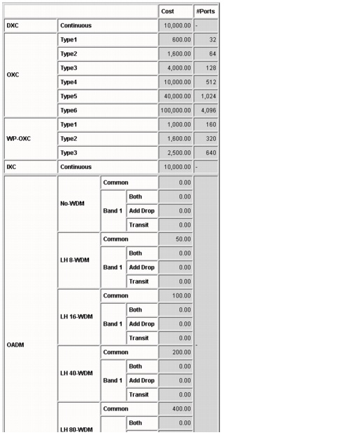
- The next part is the Node Port Cost section: this shows the port cost per bit rate. The first table shows the DXC, IXC, and ADM tributary port cost per DCL bit rate. The second table displays the trunk and tributary port, the terminal multiplexer, the short reach transponder and the ADM cost per OCH bit rate.
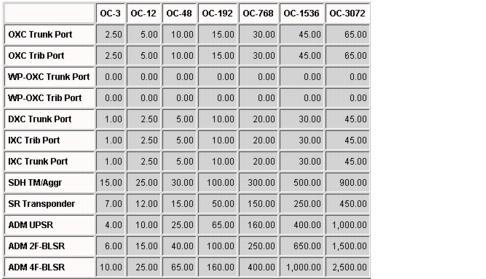
- The Link Fixed Cost table gives an overview of the generic cost parameters per cable, per fiber and per channel.
- The Link Fiber Cost table shows the cost of a WDM terminal multiplexer, an optical amplifier and regenerator (common equipment) per line system type.
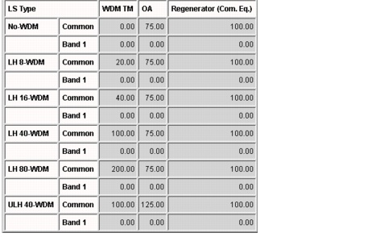
- The Link Channel Cost table displays the cost of a WDM channel card per line system type and of a regeneration card and a long reach transponder per line system type and per OCH bit rate.
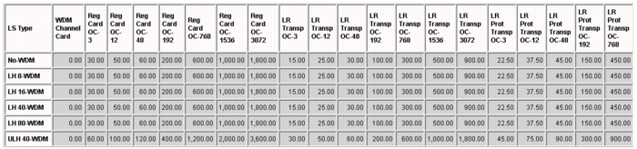
- The Link SDH Equipment Cost table shows the cost of an SDH regenerator and SDH amplifier per OCH bit rate.
- Browse through Overview Node Cost section.
- Select Overview Node Cost.
This table gives an overview of the cost of the node equipment installed in the network. In this example there are DXCs and OXCs installed in the network. Also (short-reach) transponders have been installed in the nodes. In the next sections, more details are given about the installed node equipment.
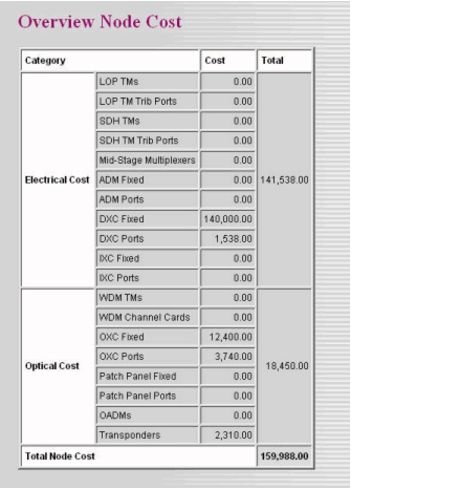
- Select DXC.
This table gives an overview of the used tributary ports (per DCL bit rate) and the used trunk ports (per OCH bit rate) on the DXCs in the network. Next, the installed DXC type is shown. Because we have chosen the continuous DXC model in this example, all installed DXCs are of the Continuous type. To conclude the table, the total cost per DXC is calculated.
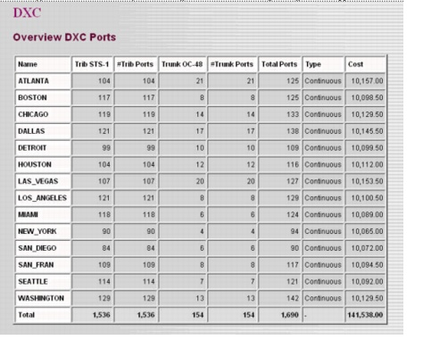
- Select OXC.
This table gives an overview of the used tributary ports and the used trunk ports (both per OCH bit rate) on the OXCs in the network. Next, the installed discrete OXC type is shown. In some nodes Type1 is installed, while in other nodes it is needed to install a bigger type—Type2. To conclude this table, the cost per OXC is calculated.
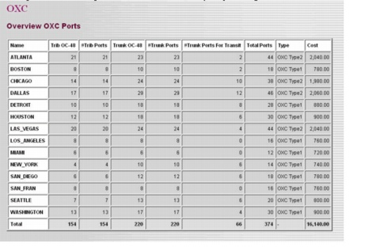
- Select Transponder.
This table gives an overview of the installed transponders in the nodes (per OCH bit rate) and their cost. Because the OCH layer mode is opaque in this example, only short-reach transponders are installed in the nodes (long-reach transponders are installed on the links at the WDM terminal multiplexers).
Note—If there are additional types of nodes in the network (such as ADMs, IXCs, and OADMs), similar tables appear in the Bill-of-Materials for these types of nodes.
- Browse through the Overview Link Cost section.
- Select Overview Link Cost.
This table gives an overview of the cost of the link equipment installed in the network per level: cable, fiber, channel and SDH equipment. In the next sections, the installed link equipment is described more in detail.
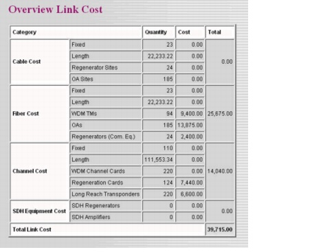
- Select WDM Terminal Equipment.
This table displays the number of equipped fibers and the number of WDM terminal multiplexers per line system type and per link. Next, it shows the available and used channels, the installed channel cards and the (long reach) transponders on each link. To conclude the table, the cost of all this equipment is calculated.
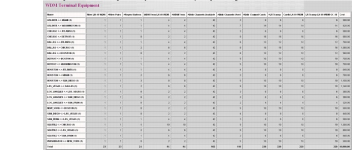
- Select In-line Regeneration/Amplification.
This table shows the regeneration and optical amplification equipment installed on the links. The cost for this equipment is calculated per link.
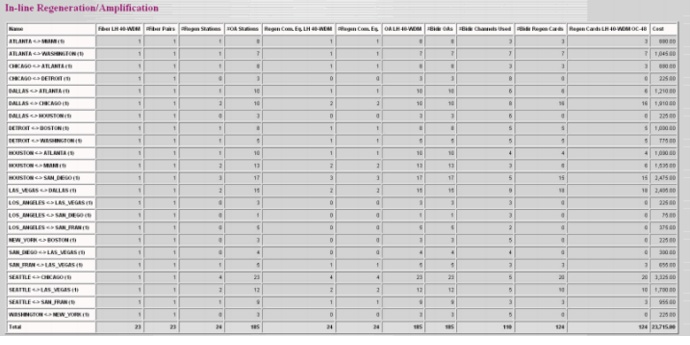
- Browse the Topology section.
This section shows the OTS (Optical Transport Section) Layer, the OMS (Optical Multiplex Section) Layer, the OCH (Optical Channel) Layer, and the DCL (Digital Client) Layer. See Figure 6-1-Layers Shown in the Topology Section .
Figure 6-1 Layers Shown in the Topology Section
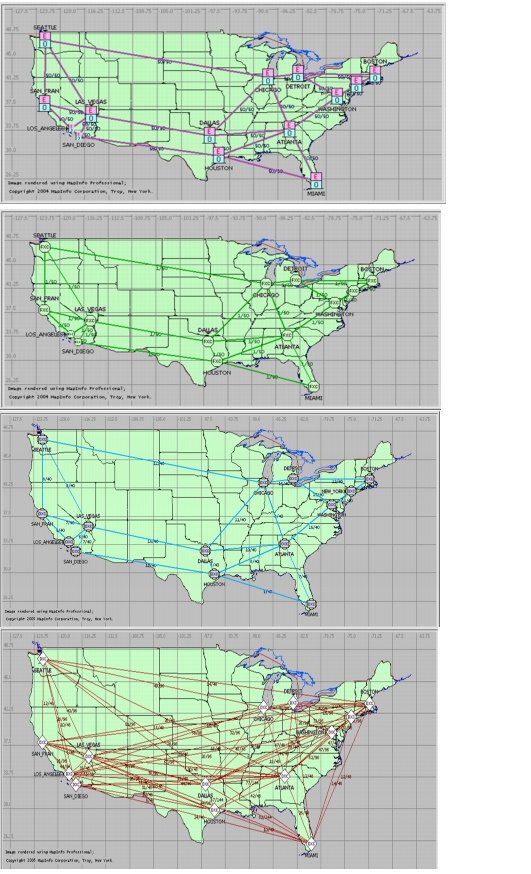
- Close the Bill of Materials report.
End of Procedure 6-1
Without closing the project or scenario, perform the following procedure.
Procedure 6-2 Generating the Connection Resources Details File
- Select Info > Export to Web Report > Connection Resources Details > By Resource Index.
The web browser is launched and the Connection Resources Details report appears.
- Browse through the DCL traffic section.
- Check the routes of a DCL connection.
- Check the working path of the connection Atlanta <-> Boston. This connection consists of four STS-1 units. The working path starts in the DXC and the OXC at Atlanta. Next, it is routed along the link from Atlanta to Washington using the first wavelength on the first fiber on the link. In Washington it is routed to New York along the first wavelength on the first fiber. In New York it is again switched at the optical level. Next, it uses the first wavelength on the first fiber on the link between New York and Boston. In Boston it is dropped in the OXC and the DXC. Note that the connection is not switched at the electrical level between its end nodes. This means that the DCL path of the connection is a one-hop route, while the OCH path of the connection is a three-hop route. The connection uses the first to the fourth timeslot on the (logical) DCL link between Atlanta and Boston.
- Check the protecting path of the connection Atlanta <-> Boston. The protecting path starts in the DXC and the OXC at Atlanta. Next, it is routed along the link from Atlanta using the first wavelength on the first fiber on the link. In Chicago the connection is dropped on the OXC and switched at the DCL layer (using the DXC). From Chicago it is routed to Detroit along the first wavelength on the first fiber. In Detroit, the connection is switched at the DCL layer (using the DXC). On the logical DCL link between Atlanta and Chicago the connection uses the first to the fourth timeslot. Also, on the logical link between Chicago and Detroit those timeslots are used. Next, the connection is dropped on the OXC in Detroit and routed along the first wavelength on the first fiber on the link between Detroit and Boston. In Boston it is dropped in the OXC and the DXC. Between Detroit and Boston the connection uses the first to the fourth timeslot on the (logical) DCL link. Note that the DCL protecting path is a three-hop path at the DCL layer because it is switched at the digital level in the intermediate nodes Chicago and Detroit. The protecting path of the connection at the OCH layer is also a three-hop route. This can be checked with the node browser (as shown in step 4).
Close the Connection Resource Details report.
- Check the routes of a DCL connection using the connection browser.
- Select Network > Connection Browser.
- Select DCL (Traffic), All (Layout) and Traffic Matrix (Order).
- Expand the traffic matrix STS-1 (using the + icon) and then expand the connection ATLANTA <-> BOSTON. The working and protecting path of the connection in the DCL layer are shown on the workspace. As mentioned in step 3, the working path is a one-hop path at the DCL layer and the protecting path is a three-hop (through Chicago and Detroit) path.
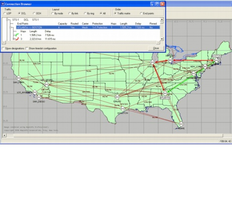
- Press the OCH button on the Project Editor toolbar. The paths of the DCL connection are now shown in the OCH layer. Note that both the working path (through Washington and New York) and the protecting path (through Chicago and Detroit) are three-hop paths in the OCH layer.
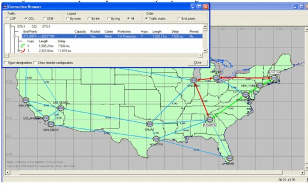
- Close the connection browser.
End of Procedure 6-2
Without closing the project or scenario, do the following procedure.
Procedure 6-3 Generating Spreadsheet Reports
- Select Info > Export to Spreadsheet...
The CSV Report Generation dialog box appears.
This dialog box lets you select the reports to generate. The .csv files are written to the following directory: op_reports\<protect_name>\<scenario_name>\SP Guru Transport Planner Reports\Spreadsheets\<date>_<time>.
- Select All, then press OK to generate the reports.
- Browse the directory for the .csv files, then open them to view the reports, as follows.
- The overview.csv file gives an overview of the traffic matrices in the network. In case traffic matrices are accommodated in the network with shared path protection or with restoration, the restoration capacity per link is listed.
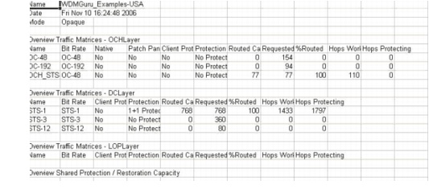
- The nodes.csv file gives an overview of the traffic in each node in the network, both at the OCH and DCL layer.
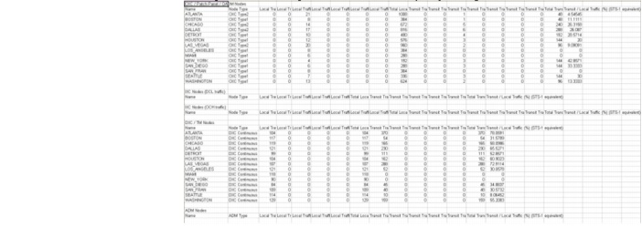
- The connections.csv file shows details about each connection accommodated in the OCH, DCL, and LOP layer.
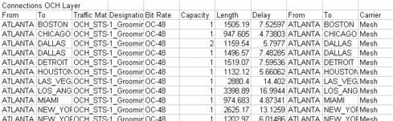
- The links.csv file displays details of all links in each layer (OTS, OMS, DCL, and LOP) of the network.
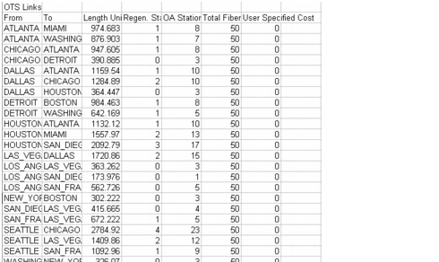
- The cost.csv file gives an overview of the cost of the link and node equipment installed in the network.
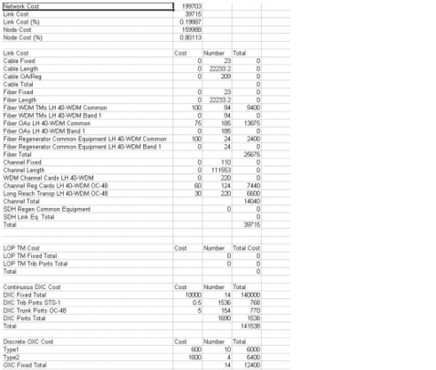
- The wavelength_usage.csv file gives an overview of the wavelength usage (network wide and per OCH link).
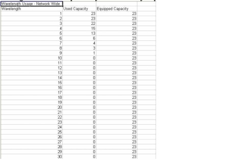
- The transparent_routing.csv file lists detailed information specific for transparent networks. This file can only be generated while in transparent OCH layer mode.
- The srlg.csv file lists which resources are sharing common infrastructure in the lower layers, thus having a shared risk of failing together.
- The restoration.csv file lists for every link failure the affected capacity and the restoration routes for those connections that can be restored.
- The bom.csv file contains the same information as the bill-of-materials in .html format (see above).
- The rings.csv file provides an overview of all rings present at the DCL layer.
- The cable_splitters.csv file lists the configuration of each cable splitter in the network.
- The fiber_routes.csv file lists the active fiber routes in the network.
- The connection_routing_details.csv file displays details about the connections accommodated in the OCH layer or the DCL layer.
Note—In this example, not all reports will contain information.
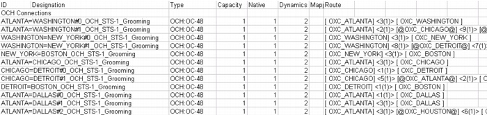
End of Procedure 6-3
| Home © 1987-2007 OPNET Technologies, Inc. All Rights Reserved. This software may be covered by one or more U.S. Patents. See complete patent notice in the Legal Notices section. OPNET Support Center |